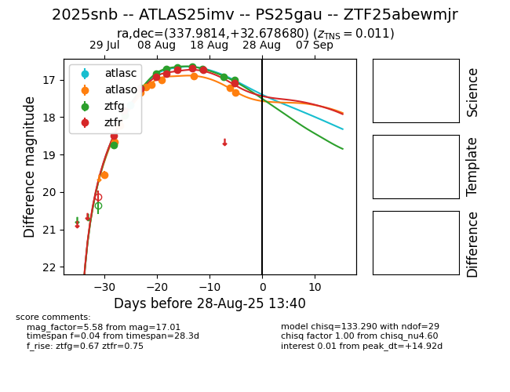

Target 2025snb at 2025-08-27 00:07, see:
FINK: fink-portal.org/ZTF25abewmjr
Lasair: lasair-ztf.lsst.ac.uk/objects/ZTF25abewmjr
ALeRCE: alerce.online/object/ZTF25abewmjr
TNS: wis-tns.org/object/2025snb
YSE: ziggy.ucolick.org/yse/transient_detail/2025snb
alt names
ZTF25abewmjr (ztf,fink)
2025snb (tns,yse)
ATLAS25imv (atlas)
PS25gau (panstarrs)
coordinates:
equatorial (ra, dec) = (337.9814,+32.67868)
galactic (l, b) = (91.7524,-21.61404)
photometry
last atlasc=17.68, atlaso=17.34, ztfg=17.01, ztfr=17.10
2 atlasc, 10 atlaso, 10 ztfg, 9 ztfr detections
